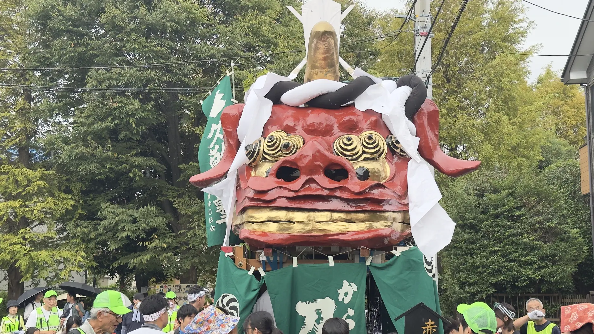

早稲田大学大学院 教育学研究科
高度教職実践専攻。理論と実践の往還を中心に据えながら、授業開発と教育工学を探究。
小学校教育・授業づくり・教育研究
授業づくり・教育研究と、日々の記録。
佐賀県唐津市出身。早稲田大学大学院教育学研究科 高度教職実践専攻にて学びながら、 2027年4月からの小学校教諭着任に向け、実践と研究を往還しています。
子どもたちが自分のよさや関心に気付き、何かに打ち込めるよう支えたいと考えています。大学院での学びと学校での実践を、このサイトに記録しています。
高度教職実践専攻。理論と実践の往還を中心に据えながら、授業開発と教育工学を探究。
教員免許取得に向けて学びを深めながら、地域の学校現場でのボランティア活動に従事。
小学校教育を軸に、授業づくりと教育研究に取り組んでいます。
小学校の総合的な学習の時間に、子どもの関心と各教科の学びを結び付け、少人数・異学年で自分の問いを追究する教育課程を構想。
学び方や表し方に選択肢を用意するUDL（学びのユニバーサルデザイン）に、生成AIを「問い返し相手」として活用。資料と照らし合わせ、学び方を自ら調整する授業を研究。
地域や社会の課題について資料を集め、確かめ、比べ、関連付ける。多様な立場を踏まえ、根拠をもとに判断し表現する学習を研究。
知識・技能と思考力・判断力・表現力を結び付け、子どものつまずきや伸びに応じて指導と評価を改善。一人一人の学力向上につなげる方法を研究。
AIの答えを資料と照らし合わせ、誤りや偏り、個人情報、著作権、他者への影響を手掛かりに、人が判断する責任を考える学習を構想。
唐津・佐賀の歴史、文化、自然、産業と地域の課題を教科等横断的に学び、自分なりの愛着や誇りを育てる独自のカリキュラムを構想中。
日々の学びや、活動の記録。
ふるさと唐津と、学びの場・早稲田。



お問い合わせ
研究や教育に関するご相談、その他のご依頼は、メールでご連絡ください。
kimu.toshiki@gmail.comクリックすると、お使いのメールアプリが開きます。
お問い合わせについて詳しく読む